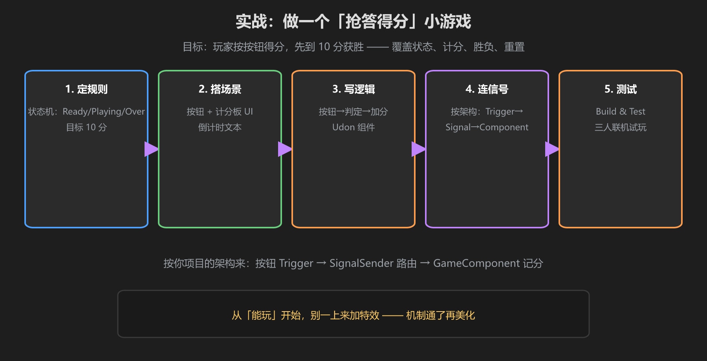
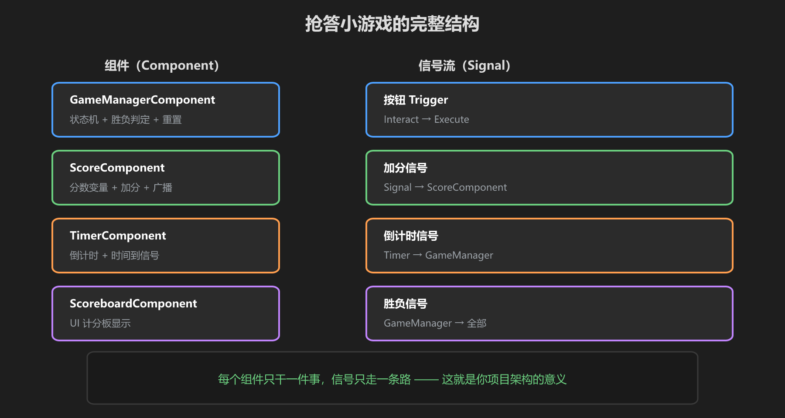

第 5 篇：动手做抢答小游戏
把前四篇串起来：状态机 + 计分 + 计时 + 胜负 + 重置，做一个抢答得分小游戏。规则：玩家按按钮抢答，答对 +10 分，先到 100 分获胜。

图：五步流程 — 定规则 → 搭场景 → 写逻辑 → 连信号 → 测试
第一步：定规则（一句话）
"玩家在 60 秒内按按钮抢答，答对加 10 分，先到 100 分获胜。"—— 写在纸上，对照做。
第二步：搭场景
- 一个可交互按钮（碰撞体 + VRC_Interactable 或 UIShape）
- 一个 Canvas：分数文本 + 倒计时文本 + 状态提示文本
- 一个空物体
GameManager（挂逻辑）
第三步：写组件（按你的架构）

图：GameManager / Score / Timer / Scoreboard 四个组件 + 信号流
// GameManagerComponent.cs（状态机 + 胜负 + 重置）
public class GameManagerComponent : UdonSharpBehaviour
{
public enum GameState { Ready, Playing, Over }
[UdonSynced] public int state = (int)GameState.Ready;
public void StartGame() { state = (int)GameState.Playing; }
public void EndGame() { state = (int)GameState.Over; }
public void ResetAll() { state = (int)GameState.Ready; }
public bool IsPlaying() { return state == (int)GameState.Playing; }
}// ScoreComponent.cs（计分 + 防重复 + 广播）
public class ScoreComponent : UdonSharpBehaviour
{
public GameManagerComponent manager;
[UdonSynced] public int score = 0;
private bool alreadyScored = false;
public void OnButtonPressed()
{
if (!manager.IsPlaying() || alreadyScored) return;
alreadyScored = true;
score += 10;
if (score >= 100) manager.EndGame(); // 胜负判定
}
}第四步：连信号
- 按钮 Trigger（Interact）→
SignalSender→ ScoreComponent.OnButtonPressed - 倒计时 TimerComponent 时间到 → 信号 → manager.StartGame() / EndGame()
- 分数变化 → 信号 → ScoreboardComponent 更新 UI
第五步：测试
- Build & Test 单人试玩：规则是否成立？
- 开第二个客户端（双开）测试同步：分数是否一致？
- 按你的检查清单逐条打勾：没开始能得分吗？结束后还能按吗？重开清零了吗？
第一次能玩就成功了。之后再加：抢答音效、按钮特效、名次结算、每轮新题目 —— 但记住：机制通了再美化。
学前检查清单
- 完成了一个可玩的抢答小游戏
- 状态判定拦住了"没开始/已结束"的得分
- 分数显示在 UI 上且同步正确
- 重置后能完整再来一局